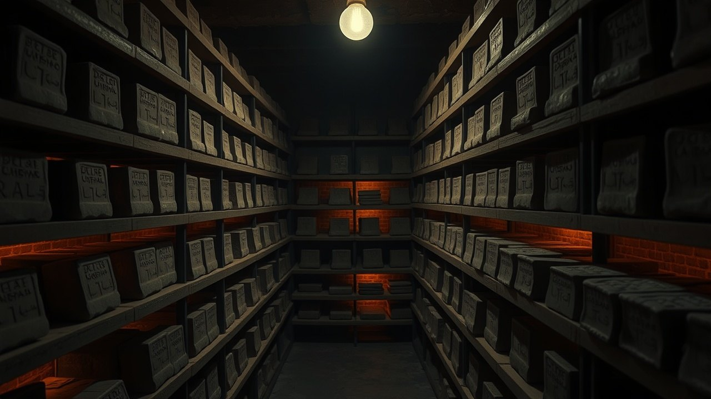

The British Museum, Great Russell Street, London. Cabinet holdings include a clay tablet dated to roughly 1700 BCE that describes the manufacture of human beings from clay and the blood of a slaughtered god. It predates the earliest layer of Genesis by approximately 800 years.
The parallels were catalogued by George Smith and his colleagues in the 1870s. The tablet still sits in the collection. The story did not make it into your Sunday school curriculum. This is why.

The Tablet Has a Catalog Number
The artifact is called the Atrahasis Epic, Tablet I. The British Museum's primary copy is registered under the K series from the Kuyunjik collection, excavated from the ruins of Nineveh in the 1850s under Austen Henry Layard and Hormuzd Rassam.
The colophon on the tablet names its scribe, Ku-Aya, and dates the copy to the reign of Ammi-saduqa of Babylon, roughly 1646 to 1626 BCE. The composition itself is older, with scholars including Wilfred G. Lambert and Alan Millard dating the original text to around 1700 BCE in their 1969 Oxford edition titled Atra-hasis: The Babylonian Story of the Flood.
The Genesis creation account, by contrast, is dated by mainstream biblical scholars including Richard Elliott Friedman to the Priestly source composed during or after the Babylonian Exile, roughly 550 BCE. That gap is not disputed. It is arithmetic.
The Recipe Is Explicit
Tablet I of Atrahasis opens with the Igigi gods, the working caste, going on strike after being forced to dig the Tigris and Euphrates irrigation canals for forty years. They burn their tools. They surround the house of Enlil.
The solution is proposed by Enki, god of Eridu, and executed by the mother goddess Ninmah, also called Nintu or Mami. The text specifies the ingredients. Clay is mixed with the flesh and blood of a slaughtered god named We-ila in the Atrahasis, and named Kingu in the parallel account preserved in the Enuma Elish, Tablet VI, held in the same British Museum collection.
The purpose stated in lines 190 through 197 of Tablet I is unambiguous. Humans are manufactured to bear the toil of the gods. Not to worship. Not to inherit. To dig.
The Eridu Genesis Uses the Same Template
Before Atrahasis, there was the Eridu Genesis, reconstructed by Assyriologist Thorkild Jacobsen in his 1981 paper published in the Journal of Biblical Literature, Volume 100. The surviving tablet, cataloged as CBS 10673 at the University of Pennsylvania Museum of Archaeology and Anthropology in Philadelphia, dates to around 1600 BCE and preserves a composition that originates several centuries earlier.
The sequence in the Eridu Genesis is fixed. Creation of humans. Establishment of cities. Divine displeasure. A flood. A survivor warned by a friendly god who builds a boat. That survivor is named Ziusudra.
The identical sequence appears in Genesis 1 through 9. Creation. Cities descended from Cain. Divine displeasure. Flood. A survivor named Noah warned by his god who builds a boat. The template is not similar. It is the same document with different theological branding.
Humans were engineered from clay and the blood of an executed god to dig canals. That sentence is on a tablet in London. It has been there since 1872.
George Smith Read It Out Loud in 1872
On December 3, 1872, at a meeting of the Society of Biblical Archaeology in London, a self-taught Assyriologist named George Smith read a paper announcing that he had translated a Babylonian flood account from tablets held at the British Museum. The audience included Prime Minister William Gladstone.
Smith's discovery, published in 1876 in his book The Chaldean Account of Genesis, laid out the parallels between the Mesopotamian material and the Hebrew Bible. The Daily Telegraph funded his return expedition to Nineveh, where he recovered additional fragments of the Gilgamesh Epic, Tablet XI, containing the flood narrative that mirrors Genesis 6 through 9.
Smith died of dysentery in Aleppo in 1876 at age 36. The tablets stayed in London. The academic conversation moved into specialist journals, read by a few hundred people who already knew. The pulpit conversation was never allowed to start.
What the Priestly Redactors Changed
The edits from Atrahasis to Genesis 1 are structural. Multiple gods become one god. The workforce motive becomes a dominion motive. The divine blood component vanishes and is replaced by the breath of Yahweh in Genesis 2:7.
The clay remains. The Hebrew word adamah, meaning ground or red earth, is the material from which adam is formed in Genesis 2:7. The Sumerian word for the same substance in the Atrahasis creation scene is tit, clay from the Apsu. Same recipe. Sanitized ingredient list.
The slaughtered-god element is what disappears. The Atrahasis text names the sacrifice. The Enuma Elish names Kingu, consort of Tiamat, whose blood is drained by the Anunnaki council under Marduk's supervision. Genesis retains no divine casualty in its creation scene. The god who dies to make humans was edited out.
Why You Were Never Told
The 1902 Bible-Babel controversy, triggered by Friedrich Delitzsch's lectures to Kaiser Wilhelm II, forced a public debate about Mesopotamian parallels. The German Protestant establishment pushed back hard. Delitzsch was accused of undermining scriptural authority.
The compromise position that emerged in seminary curricula treats the parallels as background influence rather than direct source material. That phrase was built to do a job. Background influence does not reproduce a five-beat sequence in the same order, does not carry over the same clay, does not hand the same survivor the same boat and the same flood. Copying does. The framing is preserved in most contemporary study Bibles, including the Oxford Annotated and the HarperCollins Study Bible, which acknowledge the connection in footnotes without foregrounding the recipe. A footnote is where you file a fact you have already decided the reader will not follow.
The tablets remain accessible. The British Museum's online collection database lists Atrahasis fragments under registration numbers including K.3399 and K.8562. You can request to view them. You can read the translation in Stephanie Dalley's Myths from Mesopotamia, published by Oxford University Press in 1989, still in print.
The tablet was catalogued in 1876. The parallels were published the same year. The academic community absorbed the finding. The devotional community was never told. Call that an accident if you want. Accidents do not hold their shape for 149 years across every seminary, every study Bible and every pulpit on the planet. Something has to keep choosing it, decade after decade, and something has.
The question is not whether the Atrahasis predates Genesis. The date is settled. The question is what else was in the original recipe that the redactors decided you did not need to know. Kingu's blood is one deletion. What are the others still sitting in Cabinet K at Great Russell Street, waiting for someone to ask the right question?
Before you go
7 books the Vatican doesn't want you reading. Free PDF, the texts they cut, with sources. Joined by 140+ Inner Circle members.
No spam. Unsubscribe anytime.
Go deeper
The Hidden Canon, Vol. I, Enoch. Jubilees. Thomas. Mary. Judas. 90 pages, 14 chapters, every receipt cited. The books your Bible quietly removed.
Read the Canon →Books that informed this investigation
- The Sumerians (Kramer)
- Babylon: Mesopotamia and the Birth of Civilization (Kriwaczek)
- The Ancient Near East (Hallo & Simpson)
As an Amazon Associate, Hidden Epoch earns from qualifying purchases. Cost to you: nothing.
Research safely
The VPN we use to research without being tracked. First 3 months free.
Get NordVPN →